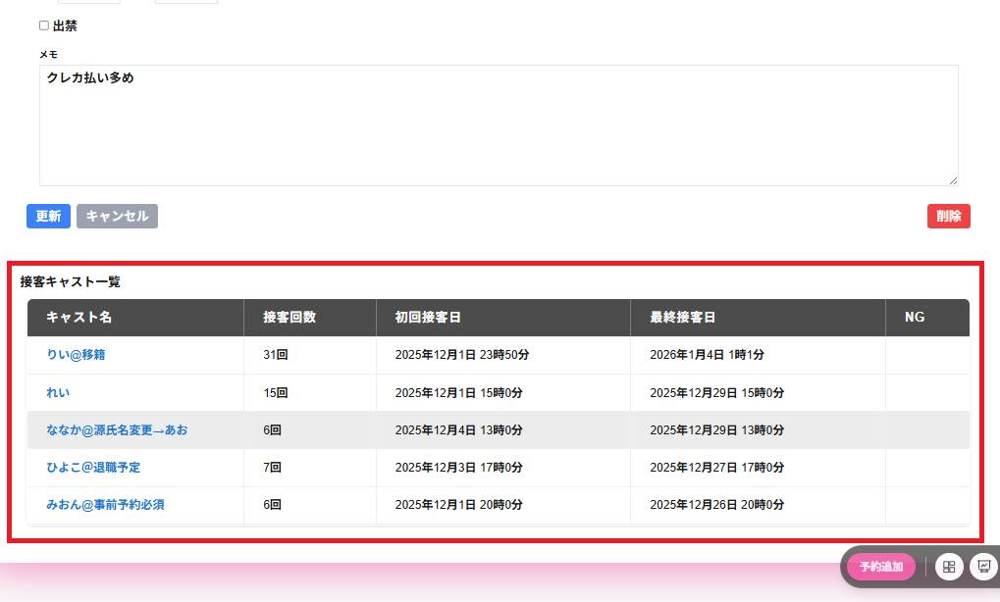

キャスト対応履歴には対象のキャストが対応した顧客の以下の項目が表示されます。
・来店日時
来店の年月が表示されます。
・種別
予約の場合は予約と表示されます。
接客実行済みの場合は接客済みと表示されます。
・請求金額
請求金額が表示されます。
・キャスト支払
キャスト支払が表示されます。
・先頭へ
最新のキャスト対応履歴が表示されます。
※最初のページが表示されている場合は、先頭へはクリックできません。
・前へ
前のページに移動し、1つ前のキャスト対応履歴一覧を表示します。
※最初のページが表示されている場合は、前へはクリックできません。
・次へ
次のページに移動し、続きのキャスト対応履歴一覧を表示します。
※最終ページが表示されている場合は、次へはクリックできません。
・NG
対象のキャストに対して、顧客の対応をNGとすることができます。
※すでにNGを登録している場合は、NGではなく、NG解除と表示されます。
・NG解除
対象のキャストに対して、顧客の対応のNGを解除することができます。
※NGは登録されていない場合は、NG解除ではなく、NGと表示されます。
対象の予約の列をクリックすると対象の予約詳細・接客詳細に画面遷移します。
